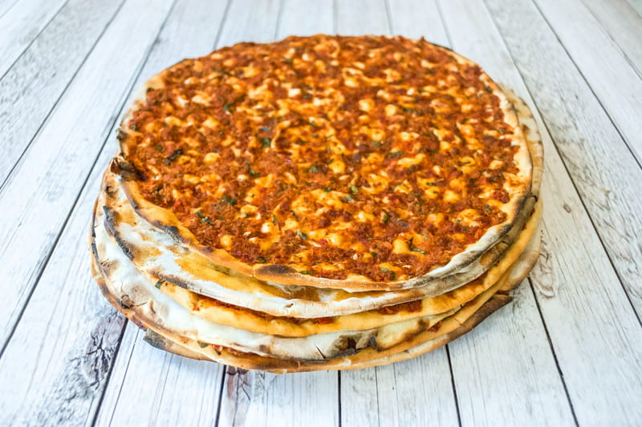

Pizzas artesanas y Kebab Tradicional
Pizzas Artesanas y Kebab Tradicional
Descubre el mundo Ariya y disfruta de los autenticos kebab turcos, con ingredientes 100% de calidad y de nuestras pizzas artesanas.
En Ariya cuidamos la calidad de nuestros platos, utilizando productos de proximidad e ingredientes de alta calidad que dota a nuestros platos de un sabor inigualable.
Mon: Closed
Tue: 12:30 – 4:30 pm, 6:30 – 11:30 pm
Wed: 12:30 – 4:30 pm, 6:30 – 11:30 pm
Thu: 12:30 – 4:30 pm, 6:30 – 11:30 pm
Fri: 12:30 – 4:30 pm, 6:30 – 11:30 pm
Sat: 12:30 – 4:30 pm, 6:30 – 11:30 pm
Sun: 12:30 – 4:30 pm, 6:30 – 11:30 pm

Adana es otro tipo de kebab turco con una presentación en una brocheta horizontal de carne picada que se asa con carbón vegetal y se pincha en un cuchillo largo. Después se adereza y se incluyen otros ingredientes para completar el plato.
Lahmacun es también conocido como pizza turca. En este caso se prepara una fina masa a modo de pan y se unta con aceite de oliva y especias y se coloca encima la carne picada para posteriormente meterlo en el horno. Generalmente se suele comer enrollado.
El döner es la forma de comer kebab más común. Kebab significa carne a la parrilla y döner que da vueltas. La carne se corta en un rollo vertical que da vueltas sobre la parrilla. Se prepara poniendo los ingredientes (carne, verduras y salsas) en un pan de pita.
Durum significa rollo así que, para prepararlo, se colocan los ingredientes sobre un pan fino y se enrolla sobre si mismo. Este tipo de Kebab es uno de los más conocidos, ya que suele ser mucho más cómodo de comer que el döner y se puede comer con gran facilidad como si fuera un bocadillo.